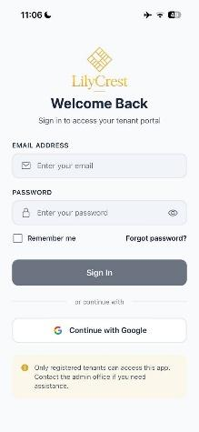
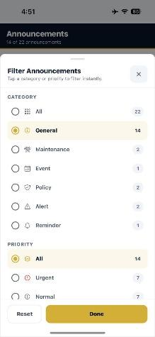

Multi-branch web & mobile system for Lilycrest Residences
Main development contribution
React Native mobile application · Android & iOS
Mobile application · Android & iOS
LILIORA
Multi-Branch Dormitory Management System
Mobile Developer · System Analyst · QA Tester
Tenant sign-in & announcements · iOS


Context
The problem
Lilycrest’s Guadalupe and Gil Puyat branches managed tenant records, reservations, and payments through manual records, spreadsheets, email, and online forms. Keeping records together and finding current information took extra time.
Rent schedules depend on move-in dates. Utility calculations also depend on meter readings, occupancy duration, and room-sharing arrangements. Maintenance concerns arrived through messages or verbal reports, making status and service history harder to track.
Team solution
One connected dormitory platform
LILIORA brings these processes into a shared system for two branches. Applicants browse and reserve through the web, tenants use account services and the mobile app during their stay, branch administrators manage operations, and the owner has cross-branch oversight.
The complete platform is our team’s output. My main development contribution is the tenant mobile application, alongside system analysis, QA, and selected web changes.
Platform context
How the platform works
Browse and reserve on the web
Applicants explore room availability by branch, room type, stay type, and price. The web system handles reservation and tenancy records.
Manage an active stay on mobile
Tenants access their stay, billing, service requests, announcements, and documents through the React Native app.
Connect requests to operations
The app calls the Node.js backend through mobile API routes. Web and mobile routes share the MongoDB connection, linking tenant actions with the records administrators manage.
The team’s public website introduces Lilycrest Residences and connects applicants with available rooms.
Individual contribution
My role
Mobile Developer · System Analyst · QA Tester
I worked on tenant mobile flows, API-backed states, validation, navigation, and platform-specific behavior for Android and iOS. My analysis and QA work focused on how user actions should behave when requests are repeated, cancelled, or interrupted.
Main development contribution
The tenant mobile application
My work connects the tenant interface to the shared system: entering an account, requesting help, reading updates, and understanding what happens next during a stay.
Tenant sign-in · iOS
Accessing a tenant account
The workflow: a registered tenant signs in to access their account. The app includes email/password and Google sign-in entry points, with authentication connecting the interface to account access.
My contribution: my work includes iOS authentication handling, Google sign-in error handling, and password-validation fixes. I also worked on the Firebase configuration used by mobile builds.
The workflow: a tenant selects a service category and urgency, describes the concern, and submits it to the shared maintenance workflow. Administrators handle the operational response.
My contribution: I worked on retaining the request’s room location when top-level values are blank and on requiring explicit confirmation before reopening a resolved request. Cancelling that confirmation must leave the request unchanged.
Announcement filters · iOS
Finding notices and confirming acknowledgement
The workflow: tenants filter announcements to find relevant updates. Some notices require an explicit acknowledgement; opening a notice and acknowledging it are separate actions.
My contribution: I worked on acknowledgement handling that prevents repeated submissions, checks the existing record before writing, and reads it again if the response is uncertain. The interface confirms success only when the returned record supports it.
Extending a stay without confusing approval and activation
I worked on the Extend Stay screen to show current terms, use the server’s available durations, confirm the tenant’s choice, and prevent duplicate requests. The interface separates approval, contract preparation, signing requirements, and the date the extension becomes effective.
If a request is accepted but its response is lost, the app checks the latest server state before reporting the result. My related work includes billing navigation and utility-notification routing, helping tenants reach the relevant record from an update.
Cross-platform development
Supporting Android & iOS
The app shares a React Native and Expo codebase, with platform-specific navigation, native configuration, and interaction work. I worked on the navigation, touch interactions, and build setup needed for both platforms.
I worked on document previews using an iOS page sheet with swipe dismissal and an accessible close control, while Android uses a full-screen presentation.
For profile-photo cropping, my changes replaced the previous responder handling with simultaneous pan and pinch gestures, with limits on zoom and image offsets.
Native configuration and dependencies
I worked on EAS build configuration and Firebase setup for both platforms, including Google sign-in callbacks and iOS dependency compatibility.
I also worked with separate Android and iOS application identifiers, release versions, and build settings.
Supporting contribution
Selected web work
I contributed a fix to the administrator’s room-transfer modal so its transfer preview is initialized before resolving the current rent. The change includes regression cases for opening while the preview is pending, applying the returned rent, and reopening the modal.
This is a specific contribution within the team’s larger web application.
My analysis work is reflected in the state handling and validation behind the mobile flows: identifying what an action means, which server record confirms it, and what the tenant should see next.
Stay lifecycle: an approved request may still need a contract or a future effective date. These states need distinct messages.
Announcement engagement: reading a notice does not satisfy an explicit acknowledgement requirement.
Request uncertainty: a missing response does not necessarily mean the server rejected the action. The app must reconcile the saved state before encouraging a retry.
Maintenance context: a request must retain its room association so the operational team can identify where help is needed.
Quality assurance
Testing actions, interruptions, and outcomes
My QA work includes manual testing on Android and iOS, functional checks, and regression cases for tenant workflows.
Repeated and cancelled actions
Extension regression cases exercise rapid repeated taps, cancellation, and leaving the screen. A second tap must not create a duplicate, and a cancelled action must not submit later.
Lost responses
Cases cover a request accepted by the server whose initial response never reaches the app, checking reconciliation against the latest state.